NestBankMobile Product Design2022 - 2023
Empowering 111,000+ entrepreneurs through digital finance and community.
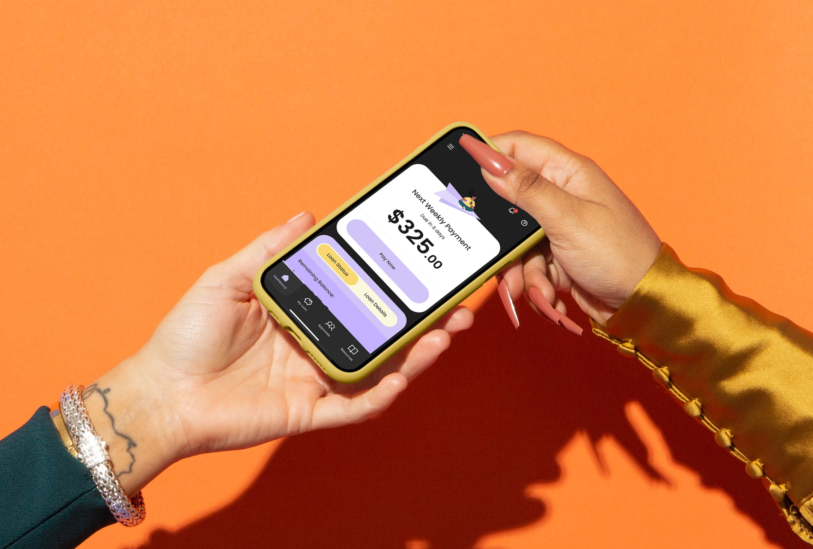
Problem
Scaling a Community Built on Trust
NestBank’s lending model was built around centre meetings, peer accountability, and personal relationships rather than technology. This approach helped members access financial opportunities often unavailable through traditional institutions.
As the organisation expanded, critical processes such as loan applications, repayments, approvals, and member support became increasingly reliant on manual administration and staff intervention. The challenge wasn’t simply digitisation. It was scaling the programme without compromising the trust, accountability, and community that made it successful.
Solution
Digitising the NestBank Experience
We transformed NestBank’s lending and account management processes into a self-service mobile experience. Members could independently manage loans, make payments, track balances, review approvals, and access key account information, reducing reliance on representatives for routine tasks.
The experience was designed to preserve the trust, transparency, and sense of community at the heart of the NestBank programme while giving members greater control over their financial journey.
Impact
01. Adoption
97% member registration rate. Nearly all invited members successfully adopted the platform.
02. Engagement
111,000+ active users. Members continued using the platform to manage their financial activities independently.
03. Digital-First Loan Management
85% of loan activity processed & approved digitally. A significant shift away from manual and staff-supported workflows.
04. Scale
1.16M+ loans disbursed digitally. Demonstrating the platform’s ability to support sustained organisational growth.
05. User Satification
4.9★ average App Store rating. User feedback consistently reflected confidence in the platform’s usability, accessibility, and ability to simplify previously manual financial processes.
01. DISCOVERY & RESEARCH
Understanding the NestBank Community
Before defining features or interfaces, we needed to understand how NestBank operated as a community-driven lending programme and the people it was built to support.
Unlike traditional financial institutions, lending decisions, repayments, attendance, and member support were deeply connected to centre meetings, peer accountability, and representative oversight. To understand this ecosystem, we mapped existing member journeys, operational workflows, and service interactions across the programme.
We also conducted interviews with classic members, elevate members, and centre managers to understand not only their tasks, but also their motivations, fears, behaviours, trust barriers, and the role NestBank played in their lives.
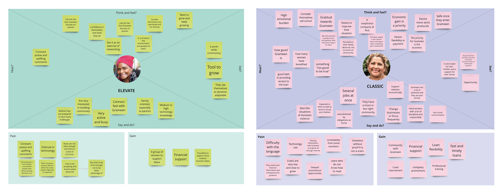
Empathy Maps
Research findings were synthesised through affinity mapping, empathy mapping, and persona development. Across interviews and journey analysis, several consistent themes emerged around trust, community, financial independence, digital confidence, and accountability.
These insights became the foundation for product strategy, experience design, and feature prioritisation throughout the project.
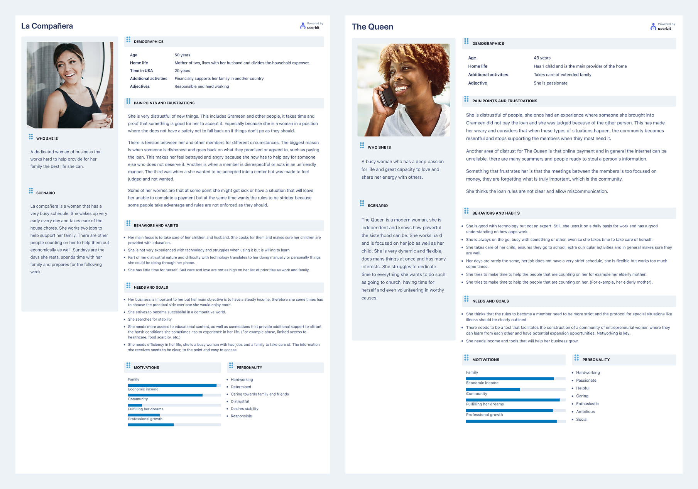
User Personas
Key Insights
01. Community Was Part of the Product
Members didn’t view NestBank as a lender. They viewed it as a support network. Weekly centre meetings created accountability, encouragement, and belonging. Any digital solution needed to strengthen these relationships rather than replace them.
02. Trust Mattered More Than Efficiency
Many members had limited experience with digital financial products. Confidence and reassurance were often more important than speed. Clear communication, transparency, and supportive interactions would be critical for adoption.
03. Financial Independence Was the Primary Motivation
Members joined NestBank to improve financial stability and create opportunities for themselves and their families. The platform needed to reinforce progress, achievement, and empowerment.
04. Digital Confidence Varied Widely
While many members used smartphones daily, comfort with financial technology varied significantly. The experience needed to accommodate both highly confident and first-time digital users.
05. THE BRAND EXPERIENCE WAS INCONSISTENT
Members described NestBank as empowering, supportive, and community-driven. At the same time, some associated the organisation with aggressive repayment practices, poor communication, and operational inconsistency. The product needed to strengthen positive perceptions while addressing the interactions that undermined trust.
03 Future State Exploration
From Research to Future State
The research phase revealed what members valued, where operational friction existed, and which parts of the experience could benefit from digitisation. Using these insights, we worked with stakeholders to explore future-state journeys, workflows, and product concepts.
Several opportunities quickly emerged. Members wanted greater visibility into their loans, repayments, approvals, and account status without relying on representatives for routine updates. At the same time, many expressed a desire for stronger connections with other members, including ways to discover businesses within their community and support one another beyond weekly centre meetings.
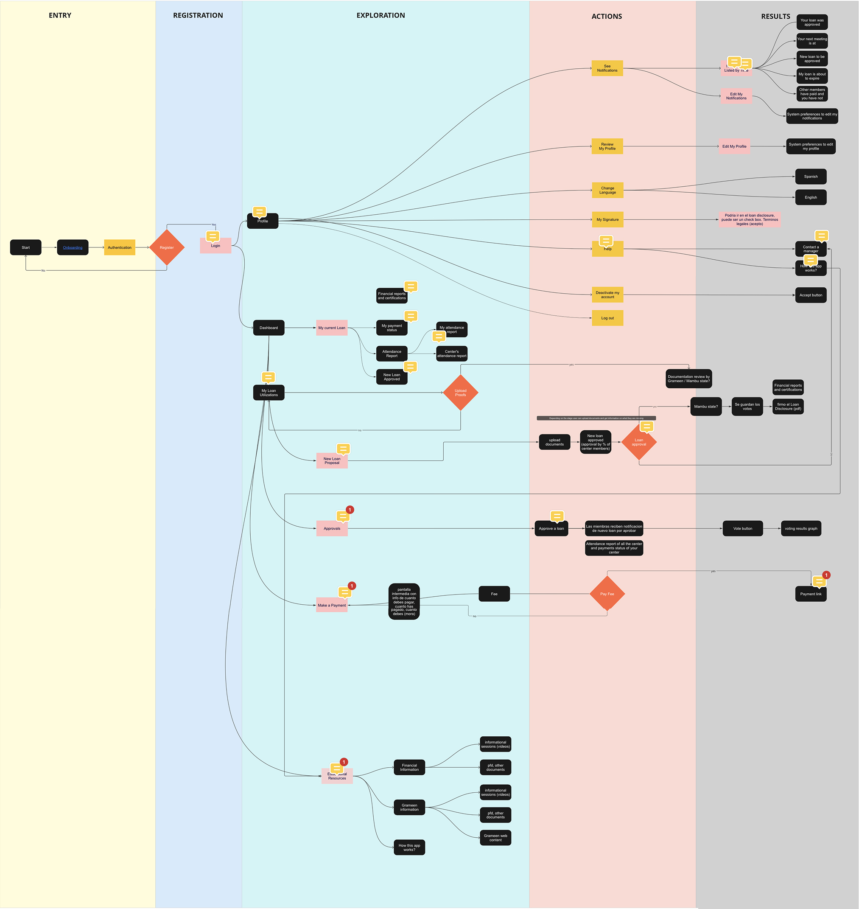
Future State Product Diagram
By mapping the experience end-to-end, we explored how these needs could be translated into a digital product while preserving the trust, accountability, and community-driven nature of the programme. These future-state product diagrams became the foundation for prioritisation, concept development, and the product strategy that followed.
04 Prioritising What to Build
Prioritising for Maximum Impact
Not every opportunity could be addressed in the first release. Working with stakeholders, we evaluated ideas based on user value, organisational impact, technical effort, and delivery constraints.
This process allowed us to focus on features that would create the greatest benefit for members while supporting NestBank’s long-term goals.
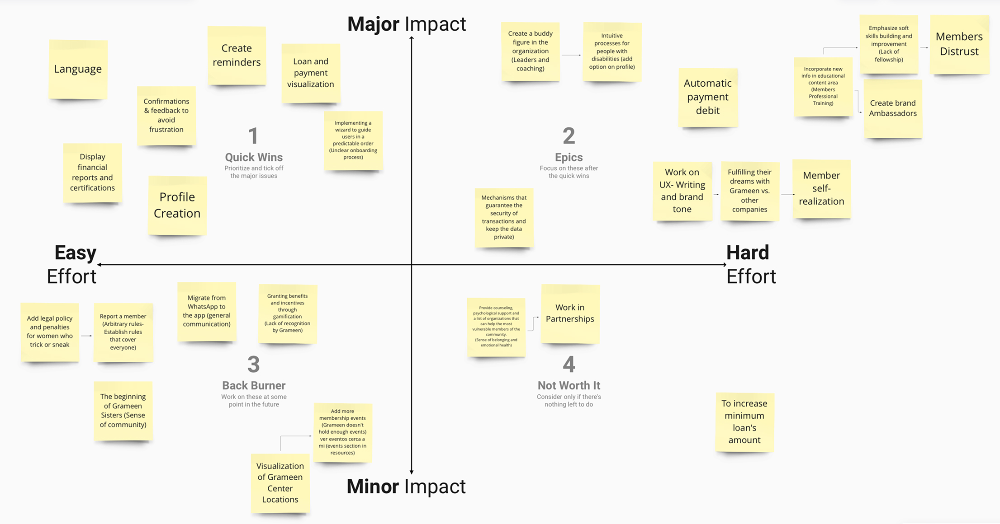
Prioritisation Matrix
05 Exploring and Validating
From Insight to Concept
Before committing to high-fidelity design, we tested key assumptions through low-fidelity concepts and prototypes.
The goal was to validate loan management, payments, approvals, attendance, and navigation. By testing flows early, we identified areas of confusion and reduced implementation risk before development began.
Low-Fidelity Wireframes
One key validation was motivation through recognition, not shame.
Early stakeholder discussions proposed making attendance more visible by highlighting members with the lowest participation rates. The intention was to increase accountability and encourage attendance through social pressure.
Research and testing suggested the opposite. Publicly exposing low attendance risked creating feelings of embarrassment, judgement, and exclusion, outcomes that directly conflicted with NestBank’s community-driven model. For members already facing financial challenges, negative reinforcement could reduce engagement rather than improve it.
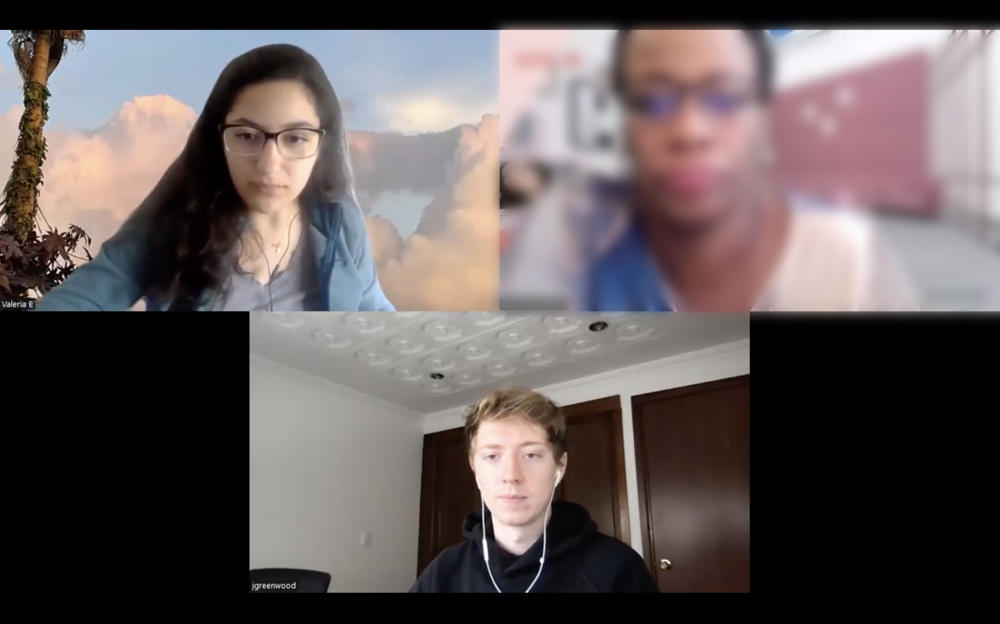
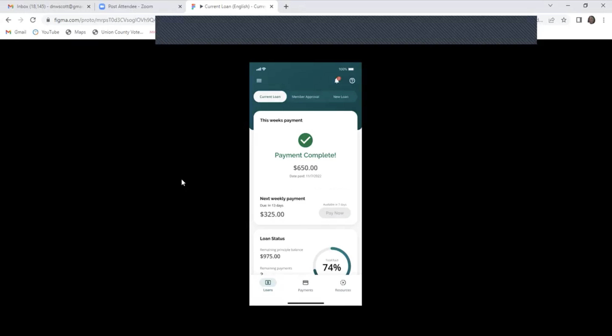
We shifted the experience towards positive reinforcement. Members could track their attendance progress, earn recognition for consistency, and unlock opportunities such as Star Member status and larger loan amounts over time.
By celebrating positive behaviours rather than penalising poor ones, the experience reinforced trust, encouraged participation, and aligned more closely with NestBank’s mission of empowerment and community support.
06 Designing for Trust and Community
Creating a Brand Members Could Identify With
Research revealed that members viewed NestBank very differently from traditional financial institutions. The organisation was described as supportive, community-driven, encouraging, and trustworthy.
At the same time, many members described existing financial experiences as intimidating, transactional, and difficult to navigate. This tension became a key design opportunity.
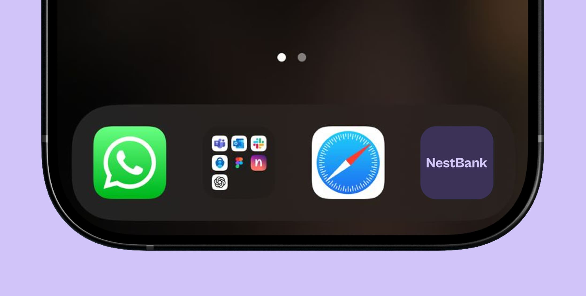
Rather than replicating conventional banking patterns, we explored how visual design, messaging, and interaction design could reinforce the values members already associated with the NestBank community. Because the majority of members were women entrepreneurs from Latin American and African American communities, representation, accessibility, and emotional connection became important considerations throughout the design process.
We intentionally moved away from the green, blue, and/or white visual language commonly associated with traditional banking products. Instead, we developed a visual system centred around purple, paired with a darker interface, to create a sense of confidence, optimism, empowerment, and distinction. Custom illustrations were used throughout the experience to increase representation, make complex financial topics feel more approachable, and reinforce a sense of community.
The goal wasn’t simply to create a banking application. It was to create a space where members felt welcomed, supported, and empowered as they worked towards their financial goals.
07 FINAL PRODUCT EXPERIENCE
Bringing the Member Experience Together
The final product transformed NestBank’s lending and account management processes into a self-service mobile experience while preserving the trust, accountability, and sense of community that defined the programme.
Members could independently manage loans, make payments, review approvals, track balances, access financial resources, and stay informed without relying on representatives for routine tasks. At the same time, the experience was intentionally designed to reinforce the values members associated with NestBank: support, transparency, encouragement, and financial empowerment.
To ensure consistency across the growing platform, we created a UI kit from scratch, establishing reusable components, interaction patterns, visual styles, and accessibility standards. This provided a scalable foundation for future features while enabling designers and developers to work more efficiently throughout implementation.
The result was a cohesive product experience that simplified complex financial processes without losing the human qualities that made NestBank different from traditional financial institutions.
08 IMPACT & FUTURE OPPORTUNITIES
How Members Responded
Following launch, feedback from members and centre leaders was overwhelmingly positive. Members highlighted the convenience of managing loans, payments, approvals, and account information in a single place, while representatives reported improved visibility into member activity and progress.
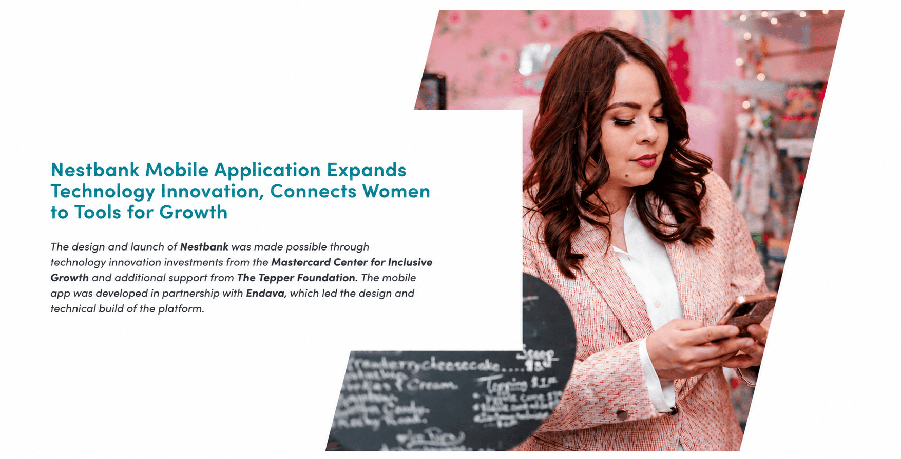
The research validated many of the principles that guided the design process. Members responded positively to the platform’s transparency, supportive communication, and simplified financial workflows. The experience successfully balanced operational efficiency with the trust and sense of community that had always been central to the NestBank model.
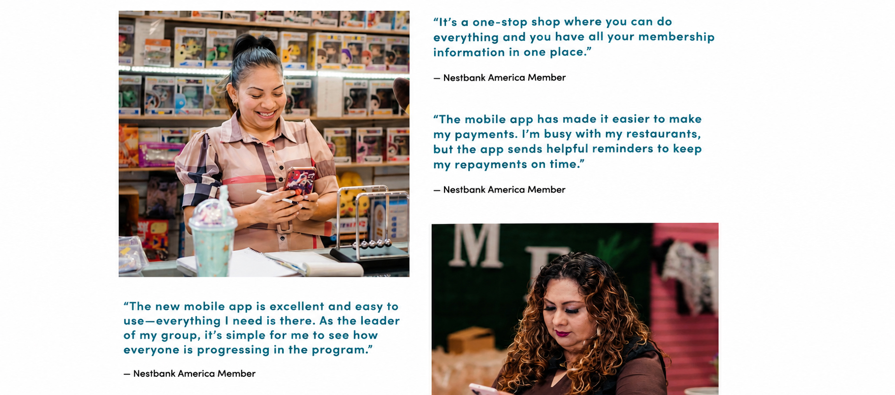
While the platform solved many of the challenges identified during discovery, post-launch feedback also revealed opportunities for future growth. Members expressed interest in stronger community features that would help them discover other businesses, connect with fellow entrepreneurs, and support one another beyond weekly centre meetings.
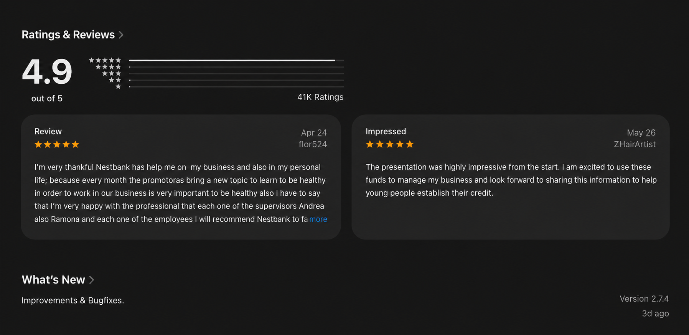
As NestBank continues to evolve, the opportunity extends beyond digitising financial services. The next chapter is creating a connected ecosystem where women can access capital, share knowledge, support local businesses, and strengthen the community that makes the programme unique.